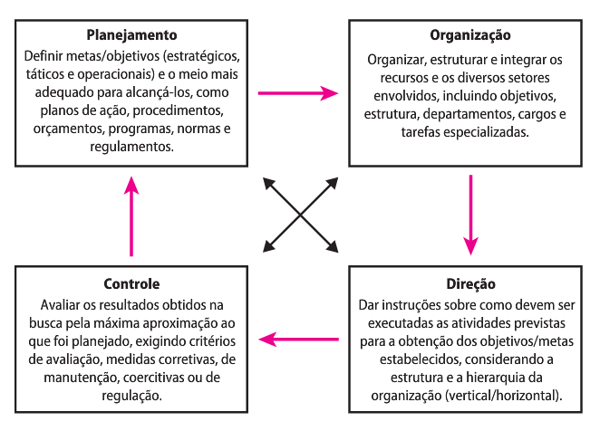

Modelagem de Processos Organizacionais
Teorias da Administração
Teorias da Administração contribuem para o modelo de gestão das mesmas. Organizações, no contexto atual, podem ser considerados sistemas abertos.
O que seriam sistemas abertos?
Segundo Von Bertalanffy, um sistema aberto é como um complexo de elementos em interação e em intercâmbio contínuo com o ambiente.
O que seria a Teoria Geral dos Sistemas?
A Teoria Geral dos sistemas é a tentativa de compreender os diversos sistemas científicos de maneira integrada. Ela se baseia nos seguintes pressupostos:
- Há uma tendência para a integração nas várias ciências naturais e sociais. • Tal integração parece orientar-se para uma teoria dos sistemas.
- Essa teoria pode ser ummeio importante de objetivar os campos não do conhe- cimento científico, especialmente nas ciências sociais.
- Desenvolvendo princípios unificadores que atravessam verticalmente os uni- versos particulares das diversas ciências, essa teoria aproxima-nos do objetivo da unidade da ciência.
- Isso pode levar a uma integração muito necessária na educação científica
A teoria geral dos sistemas, quando aplicado a Administração, entende que as empresas são organizações que, a partir de insumos, produzem produtos e / ou serviços, e, ao fazer essa produção, tem nela suas próprias organizações que se relacionam e cooperam para essa produção.
O que seria a Teoria sociotécnica?
Ela pressupõe que a organização se divide em duas partes: a técnica e a social.
- Técnica: compreende o potencial de produção de uma organização. São as demandas da tarefa, são os equipamentos técnicos etc.
- Social: compreende as relações sociais dos próprios funcionários da empresa. Elas transformam a eficiência potencial da empresa em eficiência real.
O que seria a Teoria da contingência?
Afirma que não há um modelo correto para uma organização. Que tal modelo nasce da relação da empresa com o ambiente externo. Ela se baseia nos seguintes pressupostos:
- A organização é um sistema aberto;
- As características organizacionais apresentam uma interação entre si e com o ambiente;
- As características ambientais funcionam como variáveis independentes, enquanto as características organizacionais são variáveis dependentes.
Fontes:
- http://www.unicamp.br/fea/ortega/temas530/melissa.htm
- https://www.portaleducacao.com.br/conteudo/artigos/educacao/teoria-geral-dos-sistemas-e-os-sistemas-de-informacao/59309
- http://casadaconsultoria.com.br/teoria-contingencial/
Teoria Científica da Administração
Tem com principal autor, Frederick Winslow Taylor. Este entendia que havia um desperdício de recursos e que existia uma forma correta de uma organização maximizar sua produção. Para isso, propôs o que ficou conhecido como ORT - Organização Racional do Trabalho. Os princípios da ORT são:
- Divisão clara entre quem comanda e quem executa (seleção científica do trabalhador)
- Uma ênfase na tarefa
- Padronização do trabalho e treinamento extensivo
Para a Administração Científica, o homem é um ser preguiçoso, que, no desejo de não passar fome, trabalha para ganhar seu sustento.
Teoria Clássica e neoclássica
A teoria clássica foca em:
- Definição de estrutura
- Definição de papéis
Já a teoria neoclássica:
- Foco nos objetivos e nas metas
As principais características são:
- Divisão do trabalho
- Centralização das decisões
- Pequena amplitude de controle
Processo administrativo
Veja como, no diagrama abaixo, a teoria neoclássica entende o papel do gestor:

O que é organograma?
É como ocorre a especialização do trabalho na organização. Um organograma mostra a organização em diferentes setores administrativos.
Conceitos de linha e staff
Linha é a hierarquia da empresa bem como você se encontra nela (a quem comanda e quem te comanda). Já a staff é a acessoria prestada por terceiros. Na staff não ocorre a subordinação.
Teoria das relações humanas
Segundo essa escola, o ser humano é enxergado como um homos socialis, ou seja, um ser dotado de sentimentos e temores, que procura ser aceito na sociedade em que está e procura também ter poder decisório. Uma outra definição é a de que o a eficiência do trabalho está ligada ao contexto social e não somente suas necessidades primárias.
Teorias comportamentais e de liderança
Segundo esses movimentos, a administração de uma organização deve propor a gerência participativa e a melhoria do clima de trabalho.
Hierarquia das necessidades humanas de Maslow
Segundo Maslow, o ser humanno busca no trabalho a oportunidade de satisfazer suas necessidades, desde as mais básicas até a satisfação pessoal. Veja abaixo as categorias:

Teoria X
As pessoas são preguiçosas e indolentes, não querem trabalhar. Portanto, é necessário que a gestão tenha pulso firme e puna o trabalhador que não comprir com o acordado
Teoria Y
As pessoas gostam de trabalhar, e também veem no trabalho a possibilidade de crescimento pessoal. A tarefa da gestão é proporcionar esse ambiente de livre iniciativa do trabalhador.
As duas teorias anteriores são de Douglas McGregor
Teoria dos dois fatores
Segundo Herzberg, o ser humano, ao trabalhar, possui duas atitudes:
- Satisfazer sua necessidades básicas (fatores higiênicos)
- Aperfeiçoamento de suas habilidades, seu espírito e seu potencial humano (fatores motivacionais)
O que é burocracia?
A interação entre os indivíduos deve seguir regras claras e padrões impessoais. O objetivo é evitar a arbitrariedade e organizar a atividade humana de maneira estável e que cumpra os fins propostos. Segundo essa lógica, a atividade humana deve seguir rotinas e procedimentos bem alinhados. Veja abaixo um quadro que ilustra bem essa situação:

Para um aprofundamento do conceito de burocracia, leia:
A produção como ferramenta estratégica
O que é estratégia?
A arte de alcançar resultados. Citando o conteúdo da faculdade, é um padrão geral para o alcance de objetivos.
Quais os níveis da estratégia?
Existem três níveis primários de estratégia:
- Corporativo
- Comercial
- Funcional
A estratégia corporativa possui dus áreas de interesse:
- Os negócios que a corporação irá participar
- Aquisição de recursos
Já a estratégia comercial possui duas tarefas:
- Estabelecer os limites da empresa vinculando a parte corporativa com o comercial
- Estabele a base da empresa para uma vantagem competitiva
Por fim, a estratégia funcional deverá ser desenvolvida e seguida com o objetivo de sustentar a estratégia comercial
Quem afeta o estabelecimento de prioridades da produção
- Consumidores
- Concorrentes
- Ciclo de vida do produto
Layout de produção
O que é um layout de produção?
O layout de produção, também denominado arranjo físico, é uma representação gráfica do chão de fábrica. Mais do que uma planta, é uma técnica utilizada para definir a distribuição e disposição física dos componentes da área de produção. O objetivo é organizar o espaço físico do chão de fábrica localizando os equipamentos e postos de trabalho de forma a obter maior eficiência na produção.
fonte: http://www.sispro.com.br/blog/o-que-e-layout-de-producao/
O que norteia a escolha de um layout de produção é o fluxo do processo de produção. Ou seja, a escolha de um layout se dá tendo em mente como será a produção do produto. Haverá vários produtos sendo feitos pelas máquinas? O produto se movimentará entre as máquinas/pessoas?
Quais os tipos de arranjo físico?
- Layout de projeto: o produto permanece fixo, os recursos produtivos é que se descolam para construí-lo. Neste tipo de layout, é bem comum o alto uso do sequenciamento de tarefas. Exemplo de uso são a construção de embarcações, como iates, navios...
- Centro de trabalho: o produto se movimenta entre as diversas áreas de produção, cada qual responsável por uma operação na construção do produto.
- Célula de produção: é uma área dedicada em que são fabricados produtos semelhantes quanto aos requisitos de produção. São projetas para executar um grupo específico de tarefas e produzir um grupo específico de produtos.
- Linha de montagem: os processo de trabalho são organizados e ordenados de acordo com o progresso de construção do produto. Exemplo são as fábricas de brinquedos e eletrodomésticos
Quais os tipos de layout?
- Produto ou Linear: o produto se movimenta entre as estações de trabalho e estas vão finalizando processos de produção ou adicionando peças. A ordem já é pré-estabelecida dentro do processo produtivo. A principal vantagem é o baixo custo unitário do produto, assim como baixo custo para treinamento de mão-de-obra. A principal desvatagem é a facilidade de se ter gargalos. A falta de flexibilidade, baixo uso de reaproveitamento de máquinas e mão-de-obra
- Processo ou Funcional: o produto se movimenta entre as estações, mas não há a produção somente de um produto, mas mais de um, com fluxo diferentes. Tem-se como vantagem a flexibilidade e portanto, seu uso é interessante quando a produção é intermitente.
- Fixo ou Posicional: o produto permanece fixo, sendo que as os recursos produtivos, como máquinas e pessoas se movimentam para criar o produto. Uma característica interessante é que os produtos são únicos e não repetitivos.
- Celular: todo processo de fabricação fica dentro de uma estação (célula) de trabalho, que é responsável pela produção de um ou mais produtos. O exemplo de uso é uma Loja de Departamentos.
Fonte importante: https://www.pciconcursos.com.br/aulas/administracao-geral/17-layout-da-producao-e-instalacao-arranjo-fisico-e-fluxo a partir do tempo 11:30
Playlist de consulta: https://www.pciconcursos.com.br/aulas/administracao-geral/
Padronização do trabalho
Porque padronizar os processos?
- aumento do tempo produtivo
- redução de falhas
- regulamentação das funções
Segundo Monden, a padronização do trabalho inclui:
- Tempo takt: tempo máximo que uma unidade do produto deve levar para ser produzida, ditado pela demanda do produto
- Rotina-padrão: é um conjunto de operações executadas por um operador em uma sequência determinada, permitindo-lhe repetir o ciclo de forma consistente ao longo do tempo.
- Estoque padrão em processo: estoque necessário para que a produção se mantenha constante
Ainda segundo Mondem, com a padronização, temos 3 objetivos:
- Obter alta produtividade
- Obter balanceamento entre os diferentes processos produtivos, usando o conceito de takt time
- Somente uma quantidade mínima de material é consumida e manipulada durante o processo
Segundo Spear e Bowen, as empresas precisam seguir 4 regras para ter sua padronização do trabalho:
- Todo trabalho deve ser altamente especificado quanto ao conteúdo, sequencia, andamento e resultado
- Cada conexão entre cliente-fornecedor deve ser direta
- O caminho para cada produto ou serviço deve ser simples e direto
- Qualquer melhoria deve ser feita de acordo com o método científico
Diferenças entre o takt time e o tempo de ciclo
- Takt time: ritmo de produção necessário para atender a um determinado nível de demanda
- Tempo de ciclo: tempo de execução da operação em um posto de trabalho